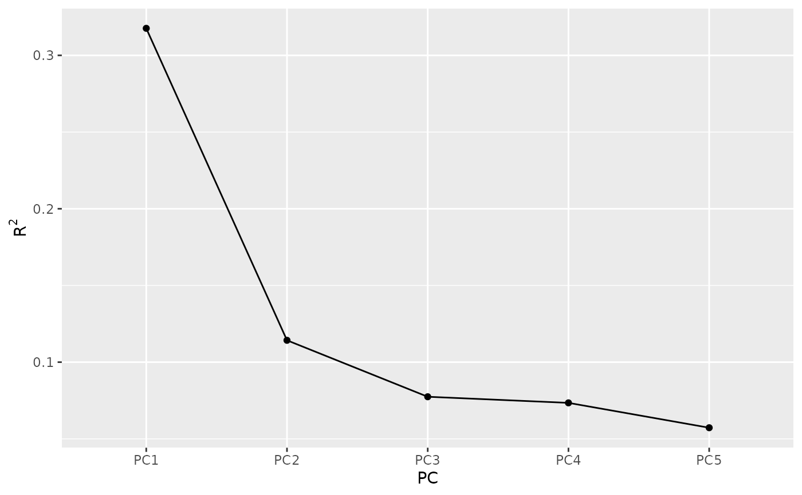
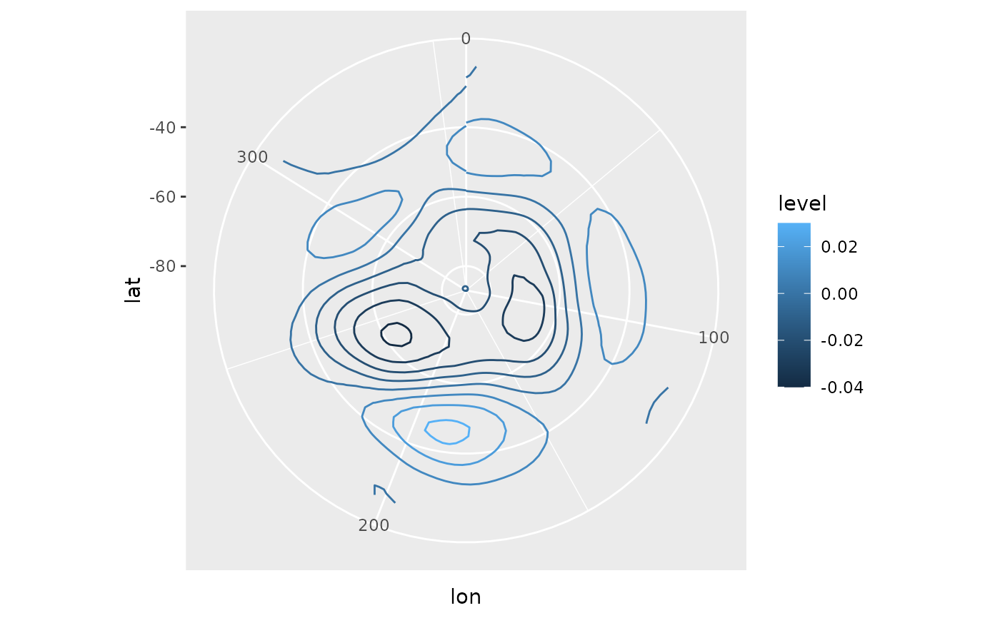
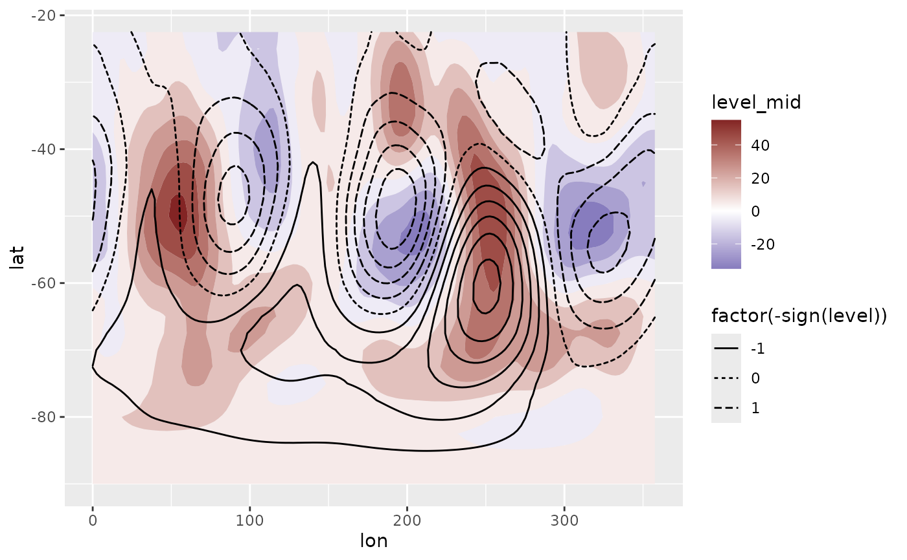

Computes Singular Value Decomposition (also known as Principal Components Analysis or Empirical Orthogonal Functions).
EOF(formula, value.var = NULL, data = NULL, n = 1, B = 0, probs = c(lower = 0.025, mid = 0.5, upper = 0.975), rotate = FALSE, suffix = "PC", fill = NULL)
Arguments
| formula | a formula passed to |
|---|---|
| value.var | optional name of the data column (see Details) |
| data | a data.frame |
| n | which singular values to return (if |
| B | number of bootstrap samples used to estimate confidence intervals. Ignored if <= 1. |
| probs | the probabilities of the lower and upper values of estiamted confidence intervals. If named, it's names will be used as column names. |
| rotate | if |
| suffix | character to name de principal components |
| fill | value to infill implicit missing values or |
Value
An eof object which is just a named list of data.tables
- left
data.table with left singular vectors
- right
data.table with right singular vectors
- sdev
data.table with singular values, their explained variance, and, optionally, quantiles estimated via bootstrap
There are some methods implemented
Details
Singular values can be computed over matrices so formula denotes how
to build a matrix from the data. It is a formula of the form VAR ~ LEFT | RIGHT
(see Formula::Formula) in which VAR is the variable whose values will
populate the matrix, and LEFT represent the variables used to make the rows
and RIGHT, the columns of the matrix.
Think it like "VAR as a function of LEFT and RIGHT".
Alternatively, if value.var is not NULL, it's possible to use the
(probably) more familiar data.table::dcast formula interface. In that case,
data must be provided.
The variable combination used in this formula must identify an unique value in a cell.
In the result, the left and right vectors have dimensions of the LEFT and RIGHT
part of the formula, respectively.
It is much faster to compute only some singular vectors, so is advisable not
to set n to NULL. If the irba package is installed, EOF uses
irlba::irlba instead of base::svd since it's much faster.
The boostraping procedure follows Fisher et.al. (2016) and returns the standard deviation of each singular value.
References
Fisher, A., Caffo, B., Schwartz, B., & Zipunnikov, V. (2016). Fast, Exact Bootstrap Principal Component Analysis for p > 1 million. Journal of the American Statistical Association, 111(514), 846–860. http://doi.org/10.1080/01621459.2015.1062383
See also
Other meteorology functions: Derivate,
GeostrophicWind, WaveFlux,
thermodynamics, waves
Examples
# The Antarctic Oscillation is computed from the # monthly geopotential height anomalies weigthed by latitude. library(data.table) data(geopotential) geopotential <- copy(geopotential) geopotential[, gh.t.w := Anomaly(gh)*sqrt(cos(lat*pi/180)), by = .(lon, lat, month(date))]#> lon lat lev gh date gh.t.w #> 1: 0.0 -22.5 700 3163.839 1990-01-01 -3.824174e+00 #> 2: 2.5 -22.5 700 3162.516 1990-01-01 -3.591582e+00 #> 3: 5.0 -22.5 700 3162.226 1990-01-01 -2.862909e+00 #> 4: 7.5 -22.5 700 3162.323 1990-01-01 -2.403045e+00 #> 5: 10.0 -22.5 700 3163.097 1990-01-01 -2.067122e+00 #> --- #> 290300: 347.5 -90.0 700 2671.484 1995-12-01 -1.449750e-07 #> 290301: 350.0 -90.0 700 2671.484 1995-12-01 -1.449750e-07 #> 290302: 352.5 -90.0 700 2671.484 1995-12-01 -1.449750e-07 #> 290303: 355.0 -90.0 700 2671.484 1995-12-01 -1.449750e-07 #> 290304: 357.5 -90.0 700 2671.484 1995-12-01 -1.449750e-07eof <- EOF(gh.t.w ~ lat + lon | date, data = geopotential, n = 1:5, B = 100, probs = c(low = 0.1, hig = 0.9)) # Inspect the explained variance of each component summary(eof)#> Importance of components: #> Component Explained variance Cumulative variance #> 1 31.8% 31.8% #> 2 11.4% 43.2% #> 3 7.74% 50.9% #> 4 7.35% 58.3% #> 5 5.73% 64.0%screeplot(eof)# Keep only the 1st. aao <- cut(eof, 1) # AAO field library(ggplot2) ggplot(aao$left, aes(lon, lat, z = gh.t.w)) + geom_contour(aes(color = ..level..)) + coord_polar()# standard deviation, % of explained variance and # confidence intervals. aao$sdev#> PC sd r2 low hig #> 1: PC1 7050.352 0.3176266 6332.199 7855.192# Reconstructed fields based only on the two first # principal components field <- predict(eof, 1:2) # Compare it to the real field. ggplot(field[date == date[1]], aes(lon, lat)) + geom_contour_fill(aes(z = gh.t.w), data = geopotential[date == date[1]]) + geom_contour2(aes(z = gh.t.w, linetype = factor(-sign(stat(level))))) + scale_fill_divergent()# 1st eof for each month. aao2 <- geopotential[, EOF(gh.t.w ~ lat + lon | date, n = 1)$left, by = month(date)] ggplot(aao2, aes(lon, lat)) + geom_contour(aes(z = gh.t.w, color = ..level..)) + facet_wrap(~ month)# Alternative interface aao2 <- EOF(lon + lat ~ date, value.var = "gh.t.w", data = geopotential)